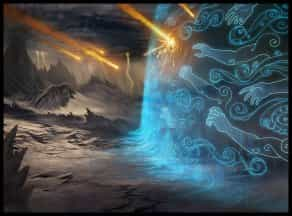

- 5 уровень, воплощение
- Время накладывания: 1 действие
- Дистанция: 120 футов
- Компоненты: В, С, М (щепотка порошка толчёного прозрачного драгоценного камня)
- Длительность: Концентрация, вплоть до 10 минут
- Классы: волшебник
- Подклассы: артиллерист (изобретатель), бронник (изобретатель), клятва искупления (паладин), заводная душа (чародей)
Невидимая стена из силового поля появляется в точке, выбранной вами в пределах дистанции. Стена появляется, будучи ориентированной в любом направлении: горизонтальном, вертикальном или наклонённом. Она может свободно парить, а может опираться на твёрдую поверхность. Вы можете создать её полусферой-куполом или сферой с радиусом до 10 футов, или можете сформировать плоскую поверхность, состоящую из плит 10 × 10 футов, количество которых может доходить до десяти. Каждая плита должна соседствовать как минимум с одной другой плитой. Какая бы форма ни была у стены, её толщина всегда 1/4 дюйма (6 миллиметров). Она существует, пока активно заклинание. Если стена при появлении проходит по пространству существа, это существо выталкивается по одну из сторон стены (на ваш выбор).
Ничто не может физически пройти сквозь эту стену. Она обладает иммунитетом ко всем видам урона, и не может быть рассеяна заклинанием рассеивание магии [dispel magic]. Заклинание распад [disintegrate] полностью уничтожает стену. Стена простирается и на Эфирный план, блокируя эфирные перемещения сквозь себя.
Силовая стена — Заклинания
Силовая стена [Wall of force]PH14 PH24
Галерея

Комментарии
Это может казаться спорным, но такова позиция разработчиков игры, озвученная в Твиттере Кроуфорда и еще кого-то. Ваш мастер может рулить это иначе, но это черевато существенными злоупотреблениями при использовании этого спелла. Стена силы и без того чрезвычайно мощное заклинание, которому мало способов противодействия.
Если разрешить кастовать через стену силы, каждый бой с противниками без телепортации и распада, будет начинаться с каста этого спелла вокруг противников (что не только без всяких спасов выключает их способность хоть что-то делать, но и выкидывает из боя всех союзников-некастеров) и далее будет происходить унылая перестрелка AoE спеллами через стену. Возможно, какие-то альтернативно мыслящие ребята и найдут такой геймплей захватывающим, но для всех остальных очевидно, что подобная трактовка этого спелла, ломает систему об колено. Следовательно, даже если бы RAW указывало бы на то что через эту стену можно кастовать (а оно не указывает), то это следовало бы запретить мастерским решением.
По разъяснением - Mike Mearls – @mikemearls@pokereleran in general, a barrier that stops physical objects stops spells, вы также не можете использовать заклы типа стены огня и т.д.
Так же стена считается полным укрытием - The reason wall of force blocks spells is that it, as an obstacle, it provides total cover to anyone fully behind it as per PHB p.196.
Однако при всем этом, вы не считаетесь невидимым находясь за стеной.
Что же касается телепортации - вы можете использовать мистический шаг, что выбраться из стены т.к. это заклинание на себя и лишь потом вы выбираете видимую точку (глазами) и телепортируетесь. А например заклинание с дистанцией, такое как громовой шаг, вы применить не можете т.к. если в закле указан дистанция это означает, чт овы выбираете точку срабатывания заклинания, чего вы сделать не можете.
Споры может вызывать переносящая дверь т.к. в описании сказано, что вы можете представить саму точку, но тут уже на откуп мастера.
А если эту точку ВИДНО т.к. стена силы, как и стекло прозрачны?
Разумеется, тут нужны или хоумрулы, или два заклинателя, или особые условия.
Да, мне тоже не нравится)
Довольно забавная трактовка...
Иначе и драконы бы не летали.
ПРОНЗАЮЩАЯ СТРЕЛА. ВЫ используете магию Преобразования, чтобы придать стреле свойство бесплотности. Когда вы используете этот вариант, вы не совершаете бросок атаки. Вместо этого стрела летит по линии в 1 фут шириной и 30 футов длиной, до того как исчезнуть. Стрела проходит сквозь объекты беспрепятственно, игнорируя укрытия. Каждое существо на этой линии должно совершить спасбросок Ловкости. При провале существо получает урон, как будто стрела попала по нему, плюс дополнительные 1к6 колющего урона. При успешном спасброске цель получает половину этого урона.